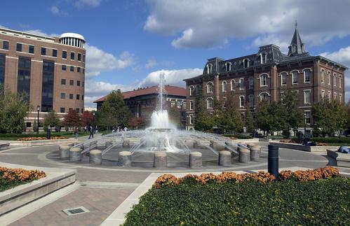

GPOTS 2015, May 26--30, Department of Mathematics, Purdue University
 GPOTS at PURDUE 2015
GPOTS future tentative hosts: UIUC 2016, TCU 2017, Miami Univ. Ohio 2018, UNM 2019 (?), Univ. Oregon 2020 (?)
Poster Program Schedule of plenary talks Schedule of contributed talks Abstracts
Documents needed if you are receiving a reimbursement
First Street Towers (click for details, address)May 26--30, 2015
Purdue University West Lafayette Indiana,
supported by the National Science Foundation and the Purdue Mathematics Department
Organizers: Marius Dadarlat and Andrew Toms Registered participants
Map showing lecture rooms, dorms and coffee shops (within 5 minutes walk) Scroll down for parking information and maps
Inquiries concerning possible financial support should be addressed to Andrew Toms.
Registration is now closed. One can still register on the first day of the conference at Purdue
(no registration fee).
There will be plenary talks of 50 minutes and 30 minutes as well as parallel
sessions for 20 minutes contributed talks. Invited speakers:
Ken Davidson Kelly Bickel
Soren Eilers Caleb Eckhardt
Adrian Ioana Ben Hayes
Henri Moscovici Mike Jury
Emily Peters Zhuang Niu
Sorin Popa David Penneys
Mikael Rordam Anna Skripka
Zhong-Jin Ruan Thomas Sinclair
Yasuhiko Sato Aaron Tikuisis
Stuart WhiteInquiries concerning possible financial support should be addressed to Andrew Toms.
Please inform the organizers if you will you need child care while you are attending this conference.
Recommended hotels:
Union Club Hotel Hilton Garden Inn Holiday Inn Lafayette-City Centre
Regretably we can no longer take requests for accomodation in student dorm rooms in First Street Towers.
First Street Towers are newly built units with private bathrooms at $65+tax per night, 10 min. walking distance from the Math Dept.
Indianapolis International Airport (code: IND) is serviced by most major airlines and their partner airlines. Ground transportation to Purdue from the Indianapolis International Airport includes:
Shuttle Services
Chicago O’Hare International Airport (code: ORD) is located approximately 140 miles north of Greater Lafayette and is approximately a 3 hour drive from the airport to Purdue. Ground transportation direct from the airport to campus is available from the shuttle services listed below.
Shuttle Services
VISITOR PARKING (Participants who drive to Purdue are advised to buy
parking permits at $5/day following the given link)
One
can buy parking permits in advance online and it is advisable to do so. Note that those
permits need to be printed immediately,
otherwise if one leaves the webpage before printing, the permit is lost.
Parking on Monday May 25 is free due to the holiday and the parking
office is closed on that day. For more information see the link above.
Map of Parking lots on Campus (Use lots marked in yellow of blue with your $5/day permit)
PURDUE MAP (there is a
parking garage marked PGU on the map, close to the Math Building)
talk 1
{kind=link}